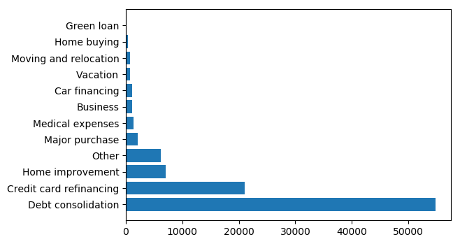
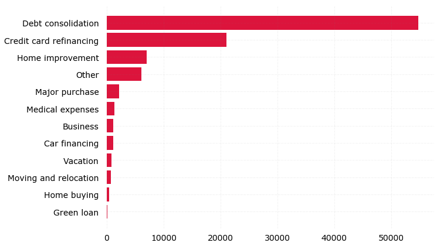
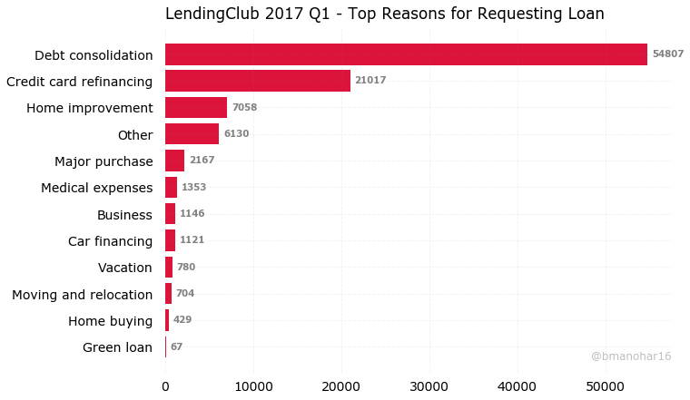

Customizing Bar Plots in Matplotlib
Bar charts are good to visualize grouped data values with counts. In this post, we will see how to customize the default plot theme of matplotlib.pyplot to our personal aesthetics and design choices.
Import libraries
# Import libraries
import pandas as pd
from matplotlib import pyplot as plt
%matplotlib inline
Custom Font in plots
from matplotlib import rcParams
# Custom Font
rcParams['font.family'] = 'sans-serif'
rcParams['font.sans-serif'] = ['Verdana']
rcParams['font.size'] = 14
Load data into pandas dataframe
# Read CSV into pandas
filepath = '/Users/bala/Dev/data/LendingClub/LoanStats_2017Q1.csv'
loan_df = pd.read_csv(filepath, low_memory=False)
Loan Reason
# Loan Reason Data Frame
title_cnt = loan_df.title.value_counts().reset_index()
title_cnt
| index | title | |
|---|---|---|
| 0 | Debt consolidation | 54807 |
| 1 | Credit card refinancing | 21017 |
| 2 | Home improvement | 7058 |
| 3 | Other | 6130 |
| 4 | Major purchase | 2167 |
| 5 | Medical expenses | 1353 |
| 6 | Business | 1146 |
| 7 | Car financing | 1121 |
| 8 | Vacation | 780 |
| 9 | Moving and relocation | 704 |
| 10 | Home buying | 429 |
| 11 | Green loan | 67 |
Basic Horizontal Bar Plot
# Figure Size
fig, ax = plt.subplots(figsize=(10,7))
# Horizontal Bar Plot
ax.barh(title_cnt.iloc[:,0], title_cnt.iloc[:,1])
# Show Plot
plt.show()

Remove axes, ticks, add grids and show top counts first
# Figure Size
fig, ax = plt.subplots(figsize=(10,7))
# Horizontal Bar Plot
ax.barh(title_cnt.iloc[:,0], title_cnt.iloc[:,1], color='crimson')
# Remove axes splines
for s in ['top','bottom','left','right']:
ax.spines[s].set_visible(False)
# Remove x,y Ticks
ax.xaxis.set_ticks_position('none')
ax.yaxis.set_ticks_position('none')
# Add padding between axes and labels
ax.xaxis.set_tick_params(pad=5)
ax.yaxis.set_tick_params(pad=10)
# Add x,y gridlines
ax.grid(b=True, color='grey', linestyle='-.', linewidth=0.5, alpha=0.2)
# Show top values
ax.invert_yaxis()
# Show Plot
plt.show()

Final Plot
# Figure Size
fig, ax = plt.subplots(figsize=(10,7))
# Horizontal Bar Plot
ax.barh(title_cnt.iloc[:,0], title_cnt.iloc[:,1], color='crimson')
# Remove axes splines
for s in ['top','bottom','left','right']:
ax.spines[s].set_visible(False)
# Remove x,y Ticks
ax.xaxis.set_ticks_position('none')
ax.yaxis.set_ticks_position('none')
# Add padding between axes and labels
ax.xaxis.set_tick_params(pad=5)
ax.yaxis.set_tick_params(pad=10)
# Add x,y gridlines
ax.grid(b=True, color='grey', linestyle='-.', linewidth=0.5, alpha=0.2)
# Show top values
ax.invert_yaxis()
# Add Plot Title
ax.set_title('LendingClub 2017 Q1 - Top Reasons for Requesting Loan',
loc='left', pad=10)
# Add annotation to bars
for i in ax.patches:
ax.text(i.get_width()+500, i.get_y()+0.5, str(round((i.get_width()), 2)),
fontsize=10, fontweight='bold', color='grey')
# Add Text watermark
fig.text(0.9, 0.15, '@bmanohar16', fontsize=12, color='grey',
ha='right', va='bottom', alpha=0.5)
# Save Plot as image
fig.savefig('Top Reasons for Requesting Loan.png', dpi=100,
bbox_inches='tight')
# Show Plot
plt.show()

from default theme…
Thank you for reading.